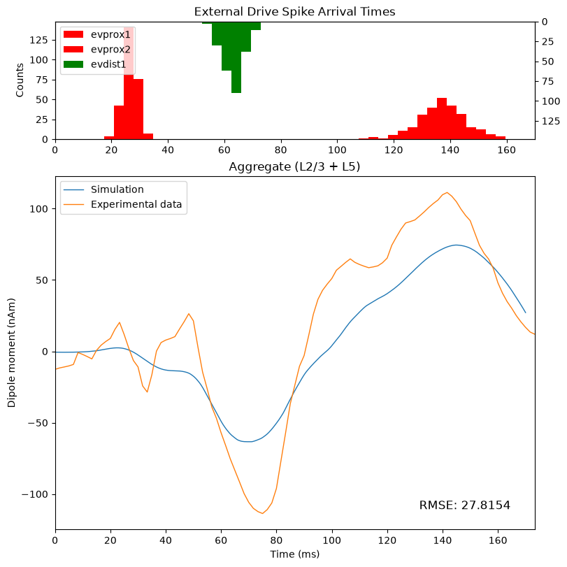
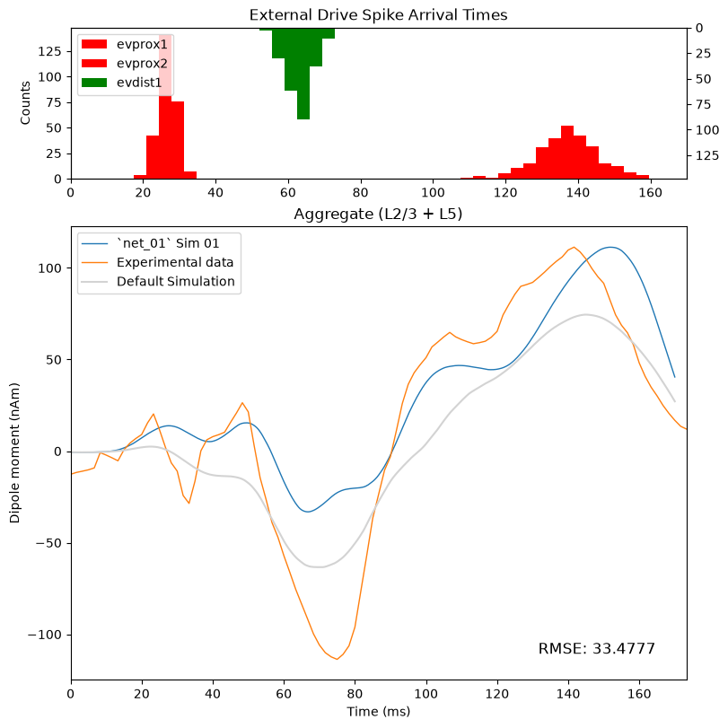
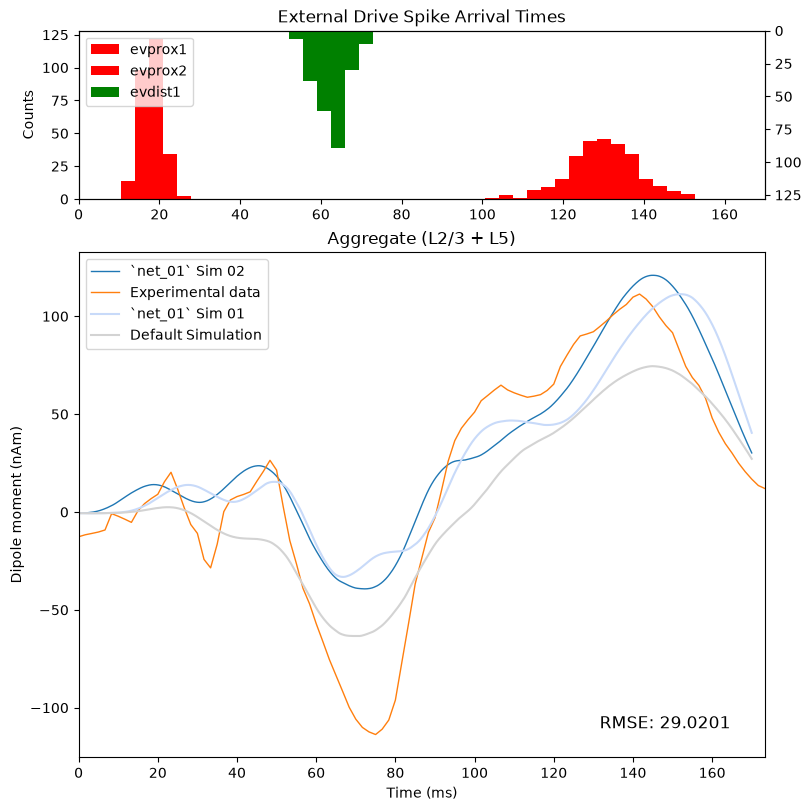
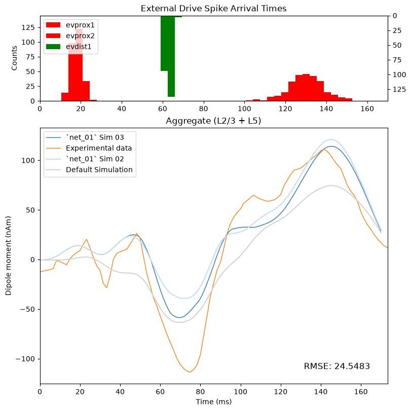
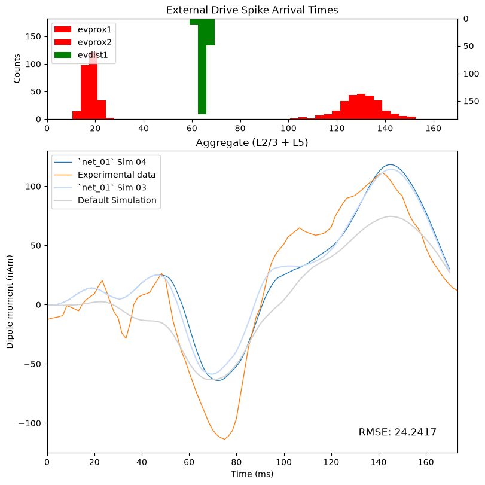

4.8 Adjusting Evoked Drives
Hand Tuning Evoked Drives
In the previous sections, we focused on interpreting the activity generated by the default network. The next few sections will cover Step 4 of our experimental workflow, as we will "tune" (adjust) model parameters by hand to explore how different hypotheses about the generators of our experimental data can inform our parameter-adjustment decisions.
As Dr. Jones noted in the introductory lecture, when working with
your own ERP data, you will typically want to start by adjusting the
External Drives.
We start by adjusting the evoked drives, rather than the local network, because the default networks we provide (those tuned to our lab's experimental MEG data) have been shown to produce realistic macro-scale signals and circuit activity (such as cell-specific spiking) across a broad range of experimental paradigms and cortical regions (see examples on our Publications Page). As such, our default networks often serve as a strong starting point for developing and testing hypotheses about the origins of ERP signals in general.
In line with our recommendation, this section will focus specifically on exploring the effects of adjusting various evoked drive parameters.
Before we start changing parameters, let's load a different experimental dataset and plot it against our default simulation. The default simulation already yields a good fit to the threshold-level data we previously loaded, so it doesn't give us much room for improvement via hand tuning. Here, we'll load the data for the suprathreshold condition of the tactile detection task.
# fetch the new data from the `hnn-data` repository
data_url = "https://raw.githubusercontent.com/jonescompneurolab/hnn-data/main/MEG_detection_data/S1_SupraT.txt"
urlretrieve(
data_url,
"S1_SupraT.txt",
); # noqa
# load the data as a `Dipole` object
suprathreshold_dpl = read_dipole(
"S1_SupraT.txt",
)
# plot the data using our custom function
fig = plot_initial_gui_figure(
net_default_gui,
processed_dipole,
suprathreshold_dpl,
)

Now that we see some notable differences in the signals, we can begin to develop hypotheses about what may have changed in the underlying network between the threshold and suprathreshold conditions. We can then select model parameters that represent those changes, and test out hypotheses via simulation.
Let's say that after examining the differences between the default simulation and the suprathreshold data, we have two primary hypotheses:
The external inputs to the local network are stronger than in the threshold condition. This could explain the differences in magnitude between several features of the waveform.
The external inputs arrive earlier than they do in the threshold condition. This could explain differences in timing for several features of the waveform
As a first step, let's consider which evoked drive parameters we have access to in the model.
One thing we have yet to discuss is how to add a drive to the network
using the add_evoked_drive method of the network
object.
We can see all available drive parameters by inspecting the
properties of the add_evoked_drive method, like so:
import inspect # noqa
print(inspect.signature(net_default_gui.add_evoked_drive))
There are quite a few parameters we can adjust, and we've already discussed several of them in previous sections.
Let's briefly walk through some of the key parameters for understanding how the evoked drives are defined, focusing on the ones that determine the timing, location, connectivity, and strength of the drives.
The timing of a drive is controlled by the mu and
sigma parameters. mu, as we've established, is
the mean arrival time of the drive. sigma is the
standard deviation, and it determines the variability in
arrival times.
The location parameter determines where the
drives connect to the network, and it can be set either "proximal" or
"distal" to target those locations in the local network.
The weights_ampa and weights_nmda
parameters specify the strength of the excitatory synaptic connections
from the drive to the target cells.
The n_drive_cells and cell_specific
parameters determine how the drive cells connect to the
network.
In the default network, cell_specific is set to "True"
and n_drive_cells is set to "n_cells", which equals the
total number of cells in the network. In the default case, a drive cell
gets assigned to each available cell in the network with 1-to-1
connectivity. When cell_specific is "False", drive cells
are assigned with all-to-all connectivity.
Finally, the numspikes parameter specifies the number of
spikes generated by each drive cell. For the default evoked
drives, this is set to 1. However, we vary the arrival times of the
spikes at the network (through sigma) to represent a burst
of input from the thalamus that arrives over a distribution of
times.
We can see most of these key parameters by simply viewing a drive object, and we can see a broader set of parameters by printing the keys for the drive object. Let's
evprox1 = net_default_gui.external_drives["evprox1"]
print(
"# " + "-"*40,
"# Drive Object",
"# " + "-"*40,
evprox1,
sep="\n"
)
print(
"\n# " + "-"*40,
"# Drive Object Keys",
"# " + "-"*40,
list(evprox1.keys()),
sep="\n"
)
Rather than modify the default network directly, let's create a new network object. This lets us keep the default network available for comparison.
Since we'll be adjusting model parameters, we'll call this
instantiation of the model net_01 to differentiate it from
the default network.
# instantiate the default network
net_01 = jones_2009_model()
We'll start by testing the first hypothesis that the external inputs are stronger.
One way we can represent stronger inputs in the model is by increasing the AMPA weights of the drives. We could similarly increase the NMDA weights.'
However, for simplicity of the example, let's say we hypothesize that the differences in our suprathreshold data are specifically related to a change in AMPA-mediated excitation on the pyramidal neurons only.
Let's first print the AMPA weights for each drive:
for key, drive in net_default_gui.external_drives.items():
print(f"{key}: {drive["weights_ampa"]}\n")
Next, we'll manually add new drives to net_01 using the
add_evoked_drive method.
Note that we'll copy most parameters directly from their conterparts
in the default network's external_drives, only changing
some of the AMPA weights. Let's roughly increase the weight of each
connection onto a pyramidal neuron by 5 fold.
# create pointers to the default drives
# ----------------------------------------
evprox1 = net_default_gui.external_drives["evprox1"]
evdist1 = net_default_gui.external_drives["evdist1"]
evprox2 = net_default_gui.external_drives["evprox2"]
# add initial feedforward drive "evprox1"
# ---------------------------------------
# we'll first copy the ampa weights, then adjust them
# NOTE: to simplify the math, we round the orignial weights
# to one significant figure ***before*** multiplying by 5
evprox1_weights = evprox1["weights_ampa"].copy()
evprox1_weights["L2_pyramidal"] = 0.100 # ~ 0.020 * 5 = 0.100
evprox1_weights["L5_pyramidal"] = 0.045 # ~ 0.009 * 5 = 0.045
# we'll then add the drive with updated weights
net_01.add_evoked_drive(
name="evprox1",
mu=evprox1["dynamics"]["mu"],
sigma=evprox1["dynamics"]["sigma"],
numspikes=1,
location="proximal",
n_drive_cells="n_cells",
cell_specific=True,
weights_ampa=evprox1_weights,
weights_nmda=evprox1["weights_nmda"],
synaptic_delays=evprox1["synaptic_delays"],
event_seed=evprox1["event_seed"],
)
# add feedback drive "evdist1"
# ---------------------------------------
# in this case, the L2_pyramidal weight is so small as to
# be negligible (7e-06). we'll arbitrarily set it to match
# our new value for the L5_pyramidal weight
evdist1_weights = evdist1["weights_ampa"].copy()
evdist1_weights["L5_pyramidal"] = 0.5 # ~ 0.1 * 5 = 0.5
evdist1_weights["L2_pyramidal"] = 0.5 # set to match L5
# we'll then add the drive
net_01.add_evoked_drive(
name="evdist1",
mu=evdist1["dynamics"]["mu"],
sigma=evdist1["dynamics"]["sigma"],
numspikes=1,
location="distal",
n_drive_cells="n_cells",
cell_specific=True,
weights_ampa=evdist1_weights,
weights_nmda=evdist1["weights_nmda"],
synaptic_delays=evdist1["synaptic_delays"],
event_seed=evdist1["event_seed"],
)
# add second feedforward drive "evprox2"
# ---------------------------------------
# NOTE: we round L2_pyramidal to one decimal place below
evprox2_weights = evprox2["weights_ampa"].copy()
evprox2_weights["L2_pyramidal"] = 7.0 # ~ 1.4 * 5 = 7.0
evprox2_weights["L5_pyramidal"] = 3.5 # ~ 0.7 * 5 = 3.5
# we'll then add the drive
net_01.add_evoked_drive(
name="evprox2",
mu=evprox2["dynamics"]["mu"],
sigma=evprox2["dynamics"]["sigma"],
numspikes=1,
location="proximal",
n_drive_cells="n_cells",
cell_specific=True,
weights_ampa=evprox2_weights,
weights_nmda=evprox2["weights_nmda"],
synaptic_delays=evprox2["synaptic_delays"],
event_seed=evprox2["event_seed"],
)
# and we'll print the names of all drives to confirm
# they were added correctly
print(
"Drives added:",
list(net_01.external_drives.keys())
)
Now let's run the simulation, preprocess the dipole, and plot the results against the data.
with chosen_backend(ncores):
dipoles_list = simulate_dipole(
net=net_01,
tstop=170.0,
n_trials=1,
dt=0.025,
)
net_01_dpl_01 = dipoles_list[0].copy()
net_01_dpl_01.smooth(30).scale(3000)
# mod_shrink_output
We can add our previous simulation to the plot as well to compare the simulations.
# plot the data using our custom function
fig = plot_initial_gui_figure(
net_01,
net_01_dpl_01,
suprathreshold_dpl,
"`net_01` Sim 01"
)
fig.axes[1].plot(
processed_dipole.times,
processed_dipole.data["agg"],
label="Default Simulation",
color="#D3D3D3"
)
fig.axes[1].legend();

Even though the RMSE is worse for the new simulation, some features of the new simulation look more representative of the suprathreshold data. For example, the wavwform shapes around the first and second proximal drives look closer to the data, but the timing of the peaks is shifted. On the other hand, the simulation looks worse overall around the time of the distal drive.
Next, let's test the hypothesis that the inputs arrive earlier to the network. To do this, we can shift the mean arrival time of each drive to be slightly earlier.
Rather than re-adding the drives manually, as we did above, we can simply edit the parameters in the current network, and then rerun the simulation.
The mean arrival time ("mu") for each drive is as follows:
for name, drive in net_01.external_drives.items():
print(f"{name}: {drive["dynamics"]["mu"]}")
Lets shift each drive to be earlier in time. We'll make a more pronounced change to the proximal drives, as the time-shift in those drives appears more pronounced.
# first we'll create a dictionary of updated
# mean arrival times for the drives
update_arrival_times = {
"evprox1": 18,
"evdist1": 63,
"evprox2": 130,
}
# then, we'll loop through the drives and update the "mu"
# parameter for each drive, using the name as the key
for name, drive in net_01.external_drives.items():
print(f"\nUpdating {name}...")
print(f" starting value: {drive["dynamics"]["mu"]}")
drive["dynamics"]["mu"] = update_arrival_times[name]
print(f" `mu` now set to {drive["dynamics"]["mu"]}")
And we'll re-simute the network and generate our dipole comparison plot once again
with chosen_backend(ncores):
dipoles_list = simulate_dipole(
net=net_01,
tstop=170.0,
n_trials=1,
dt=0.025,
)
net_01_dpl_02 = dipoles_list[0].copy()
net_01_dpl_02.smooth(30).scale(3000)
# mod_shrink_output
# plot the data using our custom function
fig = plot_initial_gui_figure(
net_01,
net_01_dpl_02,
suprathreshold_dpl,
"`net_01` Sim 02",
)
fig.axes[1].plot(
net_01_dpl_01.times,
net_01_dpl_01.data["agg"],
label="`net_01` Sim 01",
color="#C8DAF9"
)
fig.axes[1].plot(
processed_dipole.times,
processed_dipole.data["agg"],
label="Default Simulation",
color="#D3D3D3",
)
fig.axes[1].legend();

The timing of the peaks does look better than the previous simulation, though we could likely improve the fit further by continuing to hand-tune the values. For example, we may have overshot out target peaks by shifting the first proximal drive to bee too early in time.
However, for now, let's move on to exploring other parameters. Specifically, let's see if we can improve the fit around the distal drive.
Consistent with our hypothesis on the timing of the drives being
shifted, we can also very the sigma parameter to make the
distal drive more synchronous. Let's try reducing the value of sigma to
1.5
evdist1_net_01 = net_01.external_drives["evdist1"]
print(f"Updating `sigma` for {name}...")
print(
" starting value: "
f"{evdist1_net_01["dynamics"]["sigma"]}"
)
evdist1_net_01["dynamics"]["sigma"] = 1.5
print(
" `sigma` now set to "
f"{evdist1_net_01["dynamics"]["sigma"]}"
)
with chosen_backend(ncores):
dipoles_list = simulate_dipole(
net=net_01,
tstop=170.0,
n_trials=1,
dt=0.025,
)
net_01_dpl_03 = dipoles_list[0].copy()
net_01_dpl_03.smooth(30).scale(3000)
# mod_shrink_output
We'll only plot the two most recent simulations for readability
# plot the data using our custom function
fig = plot_initial_gui_figure(
net_01,
net_01_dpl_03,
suprathreshold_dpl,
"`net_01` Sim 03",
)
fig.axes[1].plot(
net_01_dpl_02.times,
net_01_dpl_02.data["agg"],
label="`net_01` Sim 02",
color="#C8DAF9"
)
fig.axes[1].plot(
processed_dipole.times,
processed_dipole.data["agg"],
label="Default Simulation",
color="#D3D3D3",
)
fig.axes[1].legend();

Once again, the signal appears to have improved. In this case, it could be that the more-synchronous distal depolarization from the distal drive is driving the strong "inward" current observable in the aggregate dipole. Though we would need to examine the circuit-level details to explore that idea.
Changing sigma also appears to have slightly shifted the
timing of the peak around 70ms. This is not entirely unexpected, as
reducing the standard deviation means the peak will be narrower arround
the mean.
Let's make a small adjustment to the mean arrival time of the distal drive to account for this shift.
evdist1_net_01 = net_01.external_drives["evdist1"]
print(f"Updating `mu` for {name}...")
print(
" starting value: "
f"{evdist1_net_01["dynamics"]["mu"]}"
)
evdist1_net_01["dynamics"]["mu"] = 65
print(
" `mu` now set to "
f"{evdist1_net_01["dynamics"]["mu"]}"
)
with chosen_backend(ncores):
dipoles_list = simulate_dipole(
net=net_01,
tstop=170.0,
n_trials=1,
dt=0.025,
)
net_01_dpl_04 = dipoles_list[0].copy()
net_01_dpl_04.smooth(30).scale(3000)
# mod_shrink_output
# plot the data using our custom function
fig = plot_initial_gui_figure(
net_01,
net_01_dpl_04,
suprathreshold_dpl,
"`net_01` Sim 04",
)
fig.axes[1].plot(
net_01_dpl_03.times,
net_01_dpl_03.data["agg"],
label="`net_01` Sim 03",
color="#C8DAF9"
)
fig.axes[1].plot(
processed_dipole.times,
processed_dipole.data["agg"],
label="Default Simulation",
color="#D3D3D3",
)
fig.axes[1].legend();

The timing is now much more in line with the experimental data, and the fit around the distal drive is fairly close to our starting point.
The simulation in its current state is by no means a perfect representation of the data, and there are still many areas we could improve with more hand tuning. But you can see that the RMSE has improved from our starting point, and we have a waveform that at least looks more representative of the data.
Keep in mind that, in practice, we would not rely on the aggregate dipole alone for tuning parameters. We would also want to look at the layer-specific dipoles, spike raster plots, and potentially other figures as we go through this iterative parameter adjustment process, as we illustrated in the previous Multiscale Interpretation sections.
The point of this exercise was not to arrive at a perfectly hand-tuned simulation, but rather, to give you insight into how we think about tuning parameters in HNN. And the end goal of this hand-tuning process is not to minimize the RMSE between the simulation and the data. The goal is to develop and test hypotheses about the circuit mechanisms that generated your data.
The underlying circuit information that comes out of the model can then give you targets for validation in follow-up experiments (e.g., with invasive animal recording, or other imaging modalities)